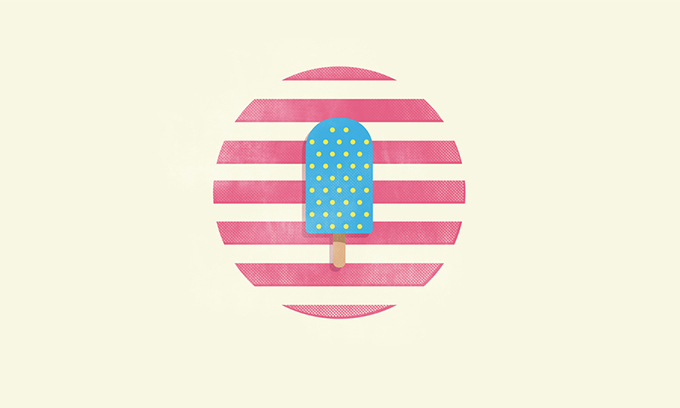

Kuuva是我电脑上一款随机换桌面的软件，今天突然给我换上了上面这张图，这才让我想起来今年夏天连一支雪糕都没有吃过。虽说冰激凌还是吃过2、3次，但明显吃的欲望越来越淡了，即使在最热的天气，也只是想喝点冰水而已。
就在几年前，每年夏天还都会去批发一堆雪糕冰激淋填满冰箱，每天不吃一两支总觉得不爽，下班回家路上买支雪糕边吃边走还会自我感觉比周围那些没雪糕吃的人幸福一些。而现在，虽然逛超市的时候，也会在冰激淋柜前流连，看看又有哪些新奇的雪糕，Fab的订阅也会常常在夏天应景的发来各式各样冰激淋的照片，但看过后仅仅止于欣赏，极少再有购买的冲动。 大概年纪越大，心态变得平和，体内环境也开始变得平和，不再像年轻时非得要外界刺激才能解除烦燥。对口味的追求也趋于平淡，简单的冰水已经好过讲究口感，口味丰富，外型吸引的雪糕。不过想到爸妈60多了，还是习惯每年夏天都要囤雪糕，难道是自己的心态已经太老了。